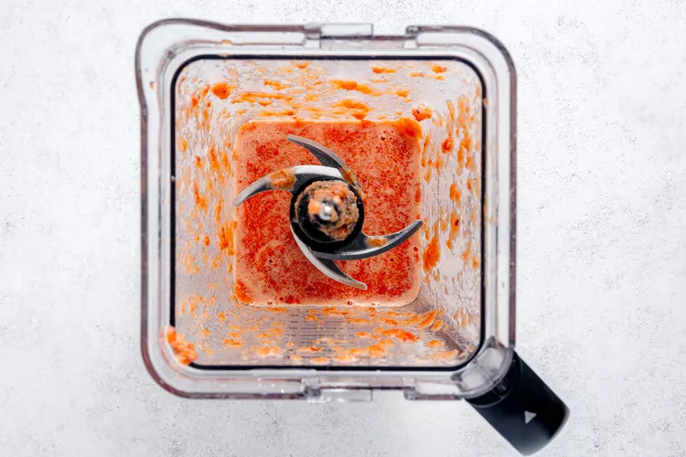
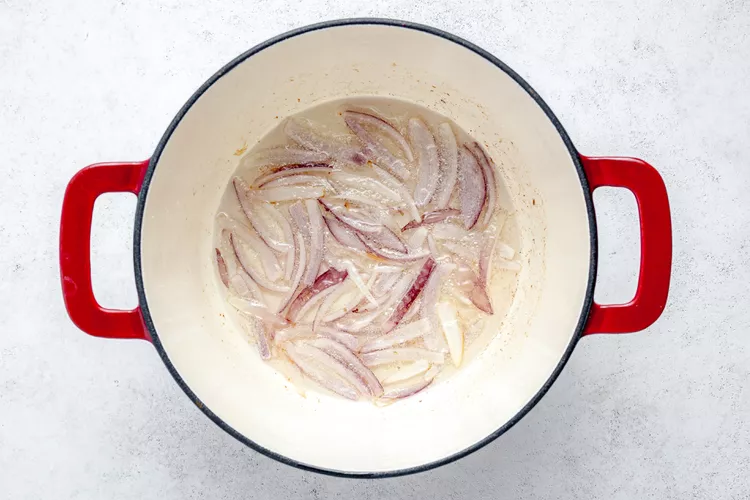
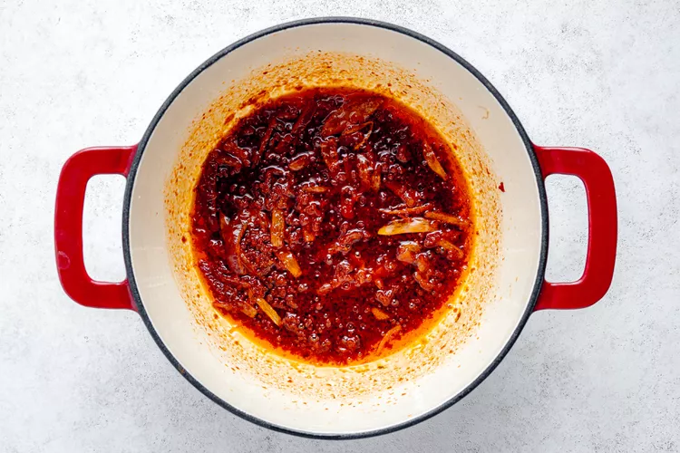
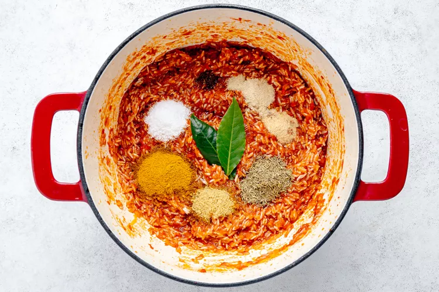
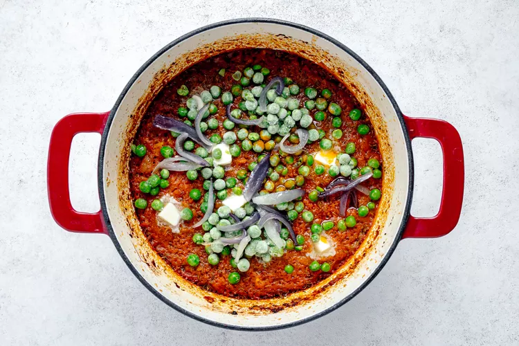
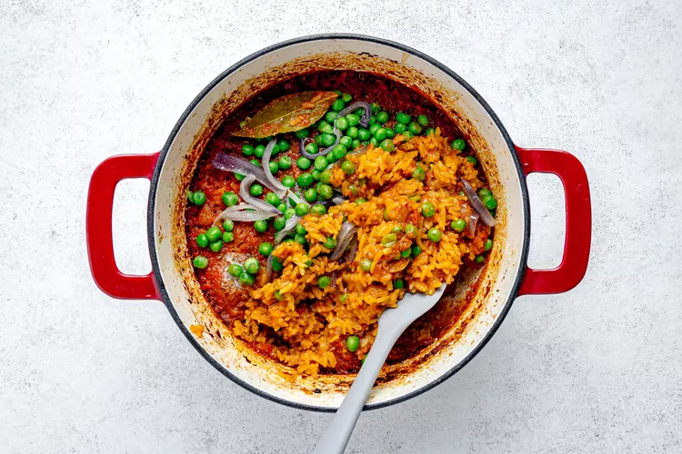

Jollof rice is bold, deeply red, and explodes with flavor
My Jellof Ingredients
For the Stew BaseAdd the bell peppers, tomato, onion, scotch bonnet or habanero pepper, ginger, and garlic into a blender, and blend until smooth. Set aside.
fry the oil on your gas. Add the onions and fry for 2 to 3 minutes, until fragrant and the edges get a little brown. Scoop out about a third of the fried onions on a small plate or bowl, and set it aside. You will use it to top the jollof rice at the end.
Add the tomato paste and cook it for 4 to 5 minutes, stirring frequently. The oil should turn red and the paste should look grainy. Reduce the heat if the paste starts sticking to the bottom of the pot and burning.
Carefully stir in pepper stew base, and cook it uncovered for 20 to 25 minutes until reduced by about half. Stir the mixture occasionally with a wooden spoon and scrape up any bits that stick to the bottom of the pot. The mixture will splatter quite a bit! Keep it covered with a splatter guard or place a lid on top slightly ajar so that moisture can escape. Adjust the heat as needed if you notice it burning or if it’s not simmering.
Stir in the rice, curry powder, bouillon cube, dried thyme, garlic powder, onion powder, nutmeg, bay leaves, and salt. Cook for about 3 minutes, stirring frequently. Then add the chicken stock, and bring it to a simmer.
Turn the heat off and tightly cover the pot with foil and a lid. Transfer the pot into the preheated oven and bake, undisturbed, for about 40 minutes.
If using the butter and peas (I highly recommend it!), remove the pot from the oven and dollop the pats of butter on top. Sprinkle the peas and the reserved fried onions on top too. Cover the pot again with the foil and lid, and bake for 5 minutes.
Gently stir the rice to incorporate the butter, peas, and onions. Discard the bay leaves and transfer the rice to a platter, if you’d like. Serve warm. Store leftovers tightly covered in the refrigerator for up to 4 days. Reheat in the microwave in 1-minute intervals until heated through.
